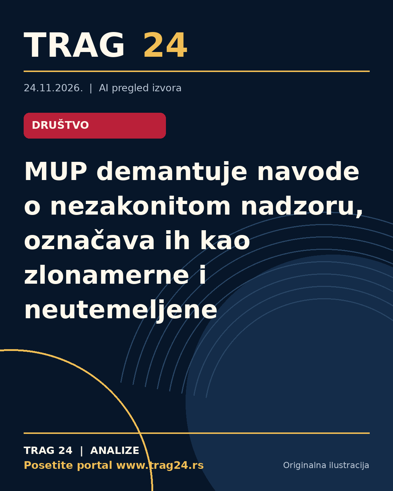

MUP demantuje navode o nezakonitom nadzoru, označava ih kao zlonamerne i neutemeljene

ŠTA SE DOGODILO
Srđan Milivojević, predsednik Demokratske stranke, izjavio je da je Bezbednosno-informativna agencija (BIA) formirala Situacioni centar za hibridne pretnje koji je navodno nezakonito nadzirao studente, profesore, novinare, aktiviste i političare. On je tvrdio da su u ovom radu učestvovali i pripadnici Uprave kriminalističke policije, Uprave policije, Vojnobezbednosne agencije i Vojne policije, te da su prikupljeni podaci prosleđivani državnom vrhu. Ministarstvo unutrašnjih poslova (MUP) odgovorilo je demantijem, odbacujući ove tvrdnje kao zlonamerne, netačne i neutemeljene.
HRONOLOGIJA
Milivojević je na konferenciji za novinare u ponedeljak izneo optužbe o navodnom nezakonitom nadzoru. Odmah nakon tih izjava, MUP i Direkcija policije su izdali saopštenja u kojima odbacuju ove tvrdnje i ističu da nijedan policijski službenik nije bio angažovan na opisanim poslovima. Ministarstvo je najavilo da će, radi zaštite integriteta policijskih institucija i službenika, obavestiti nadležne institucije i preduzeti zakonske korake protiv navoda koje smatraju neistinitim.
ŠTA NAVODE IZVORI
Izjave Milivojevića ukazuju na postojanje nezakonitog centra za nadzor i tvrdnje o uključivanju različitih bezbednosnih službi u te aktivnosti. Nasuprot tome, MUP ocenjuje da su ove tvrdnje bez dokaza, s ciljem diskreditacije policije, narušavanja poverenja građana u bezbednosni sistem i vršenja političkog pritiska na institucije. Ministarstvo navodi da se sve policijske mere i radnje izvode u skladu sa zakonom i važećim podzakonskim aktima.
ŠTA JE POTVRĐENO
Potvrđeno je da su Srđan Milivojević i MUP izneli suprotstavljene izjave o predmetu nadzora. Takođe je zvanično potvrđeno da MUP i policijske uprave smatraju ove navode neutemeljenim, te da će preduzeti pravne korake. Nemamo potvrdu o konkretnoj istrazi ili drugim merama izvan saopštenja MUP-a.
ŠTA NIJE POTVRĐENO
Nije potvrđeno postojanje Situacionog centra za hibridne pretnje niti učešće pripadnika policije u nezakonitim nadzorima. Takođe, nema zvaničnih informacija o tome da li nadležne institucije pokreću dalje postupke po ovim navodima. Nema dokaza o prosljeđivanju prikupljenih podataka državnom vrhu.
ŠTA OSTАJE OTVORENO: Ostaje nepoznato da li će nadležne institucije sprovesti istragu po ovom pitanju i kakav će biti njen rezultat. Takođe nije poznato postojanje dodatnih dokaza u vezi sa tvrdnjama Milivojevića ili na koji način će pravni postupci koje MUP najavljuje biti vođeni. Javnost i dalje nema detaljnije informacije o razmerama i prirodi eventualnog nadzora.
Izvori
- https://www.danas.rs/vesti/drustvo/mup-milivojevicevi-navodi/
- https://nova.rs/vesti/hronika/mup-milivojevicevi-navodi-o-nezakonitom-nadzoru-zlonamerni-netacni-i-neutemeljeni/
Ova analiza je pripremljena uz pomoć veštačke inteligencije na osnovu javno dostupnih izvora. Navodi izvora nisu nužno nezavisno potvrđeni.